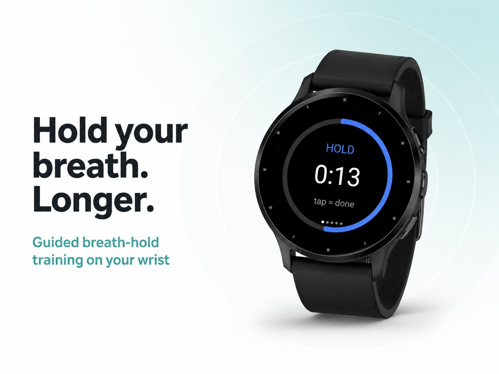
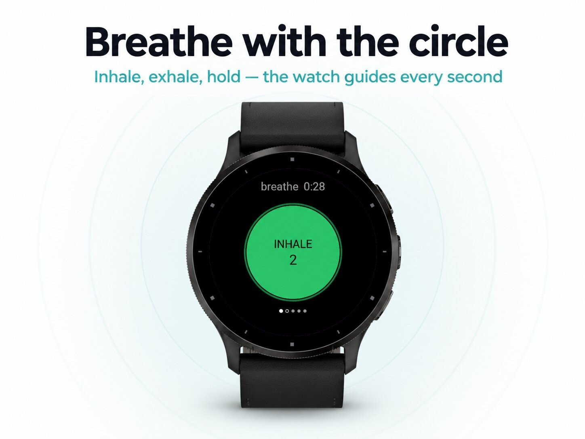
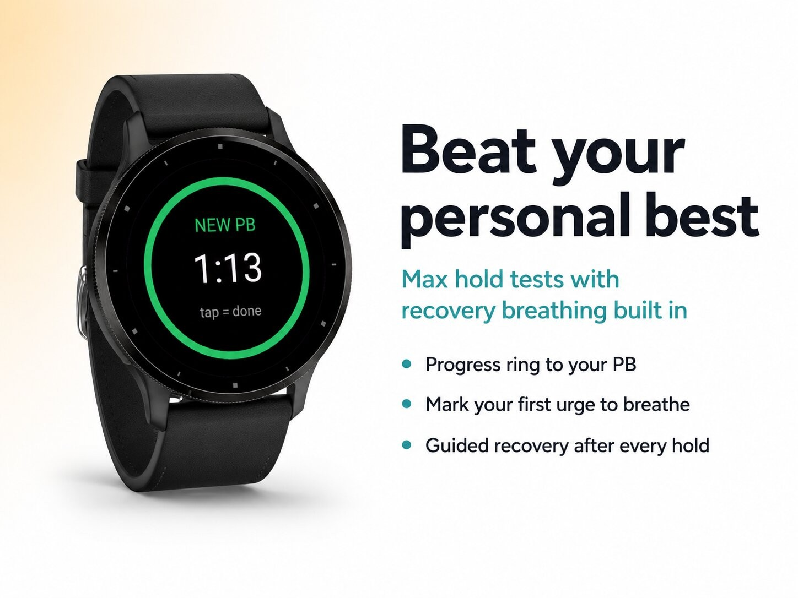
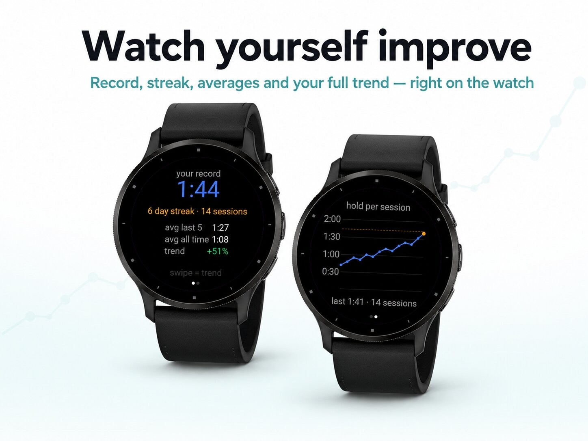
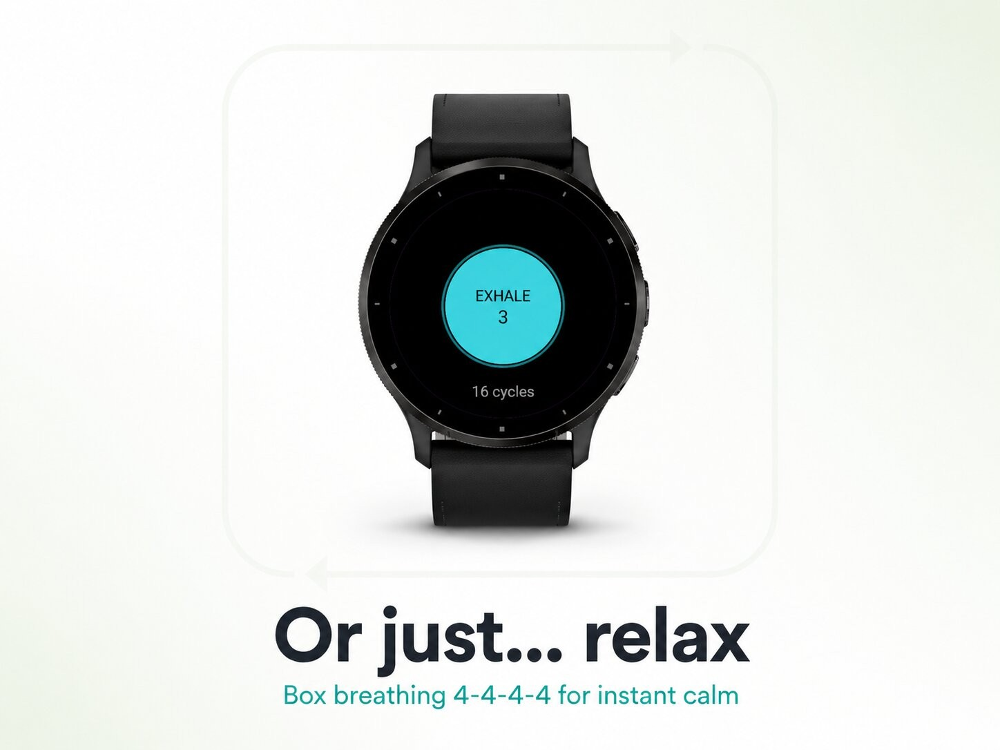

Health & habits · Device app
Breath-hold training with CO₂ and O₂ tables.





BreathGym — train your breath like a muscle.
How long can you hold your breath? And how much longer after two weeks of training? BreathGym turns your watch into a personal breath-hold coach: guided sessions that get progressively harder, record attempts, and the stats that prove — black on white — that you're improving.
A longer breath is for everyone: swimmers and snorkelers, runners working on their breathing, singers and wind players — or simply anyone who wants to feel calmer with a few minutes of conscious breathing a day.
Guided training sessions of 3, 5 or 8 rounds. Follow the breathing circle to prepare — inhale, exhale, nice and slow — then hold. Every round the target creeps up, and every completed session raises your baseline. Finish a full session and you LEVEL UP: the next one starts a little harder. That's how you grow.
Test your limit. The timer counts up while a progress ring races toward your personal best — pass it and the screen flips to NEW PB. Afterwards the app walks you through guided recovery breaths. Your live heart rate stays right there on the screen.
Not every session is about pushing. Box breathing (4-4-4-4) for instant calm — before sleep, before a presentation, or just because.
Your record, your daily streak, and a trend graph of every session with your personal best drawn right through it. Averages over your last five sessions and an improvement percentage show whether it's working.
Breath-hold training can cause dizziness or fainting. Only practice sitting or lying down, in a safe place. NEVER hold your breath in or near water, while driving, or standing up. Stop immediately if you feel unwell. This app is a training tool, not medical advice — if you have a heart or lung condition, or are pregnant, consult a doctor first.
Questions or ideas? Leave a review or contact the developer.